内視鏡センター
ー安心、安全、安楽、満足を大切にした検査を目指してー
地域の皆さまに、安心して受けていただける内視鏡検査を
九段坂病院内視鏡センターは、患者様が「安心して、苦痛が少なく、納得して受けられる検査」 を目標に、日々環境整備と技術向上に取り組んでいます。
■センターの特徴
１．健診から高度な専門治療まで
消化器疾患は「早期発見」がゴールではありません。
その後も精密な診断、そして迅速な治療へと繋がることが何より重要です。
当センターでは、日頃の健康管理から高度な内視鏡処置まで、一貫した体制を整えています。
・検診・人間ドック：千代田区区民健診をはじめ、人間ドックの検査を行なっています。
・保険診療・精密検査：便潜血陽性や胃の不快感などの精密検査を行なっています。
・内視鏡治療・緊急対応：ポリープ、早期がんの内視鏡による切除、胆道疾患の内視鏡的治療、消化管出血への緊急止血などを行なっています。
２．苦痛の少ない内視鏡検査を目指して
最新の経鼻内視鏡を多数導入し、「オエッとなりにくい」負担の少ない検査を実現しています。
経口内視鏡で咽頭反射が強い方には、鎮静剤を用いた検査も選択可能です。
体質・希望・医学的妥当性を踏まえ、最適な方法をご提案します。
３．女性が安心して受けられる大腸内視鏡検査
2025年12月より、女性医師による女性専用の大腸内視鏡検査枠を新設しました。
「異性だと不安」「羞恥心が気になる」などの声に寄り添い、安心して受けていただける体制です。
４．通いやすいアクセス、続けやすい医療体制
九段下駅から徒歩3〜5分の好立地。
お仕事の合間、健診後の精密検査など、ライフスタイルに合わせて受診いただけます。
万が一病気が見つかった場合でも、診断から治療まで当院で一貫して対応できます。
■設備について
当センターでは、オリンパス社製・富士フイルム社製の最新世代の内視鏡システムを導入しています。
どの検査においても高精度な画像で診断が可能です。
● 最新世代の経鼻内視鏡
従来より細径で画質が劣ると言われてきた経鼻内視鏡ですが、当センターでは両社の最新モデル
を導入。
経口内視鏡に劣らない高画質での観察を可能にしています。
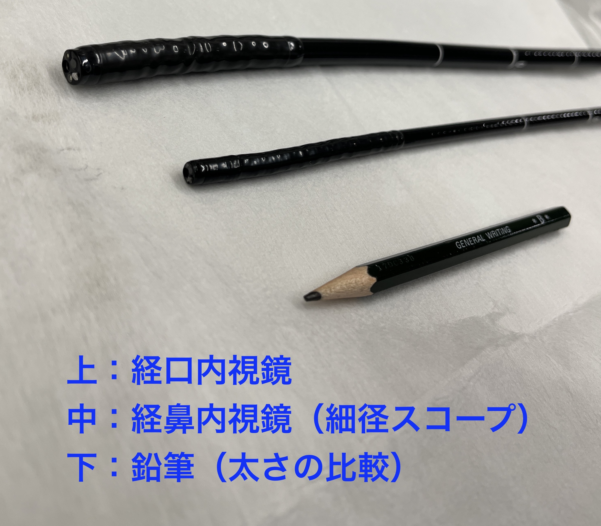
● 徹底した洗浄・消毒
使用後の内視鏡は、
1.ガイドラインに基づく用手洗浄
2.自動洗浄消毒装置による確実な消毒処理
という二段階で確実に洗浄しています。
感染対策に万全を期し、安心して検査を受けていただける環境を整えています。
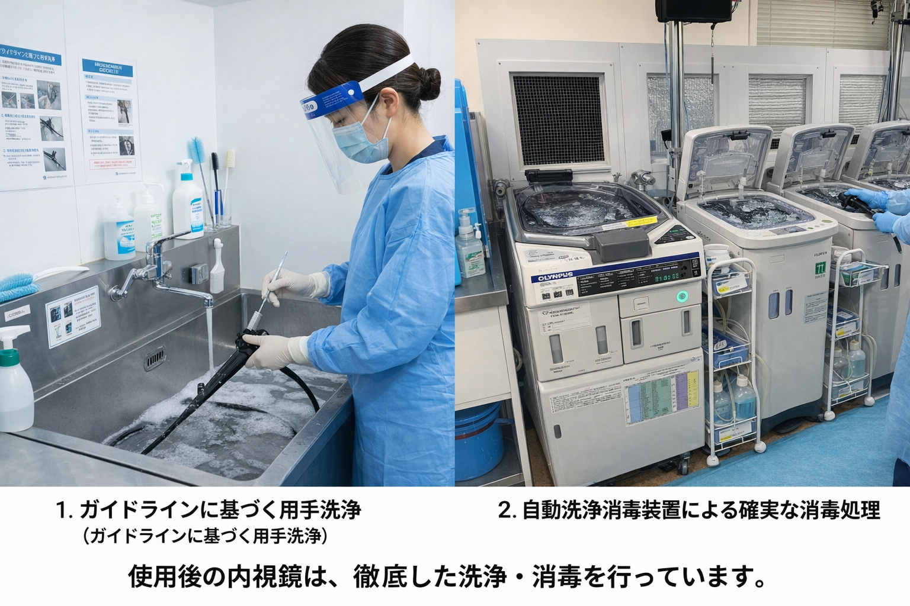
● 設備一覧
■内視鏡本体（上部・下部・側視鏡・気管支鏡）
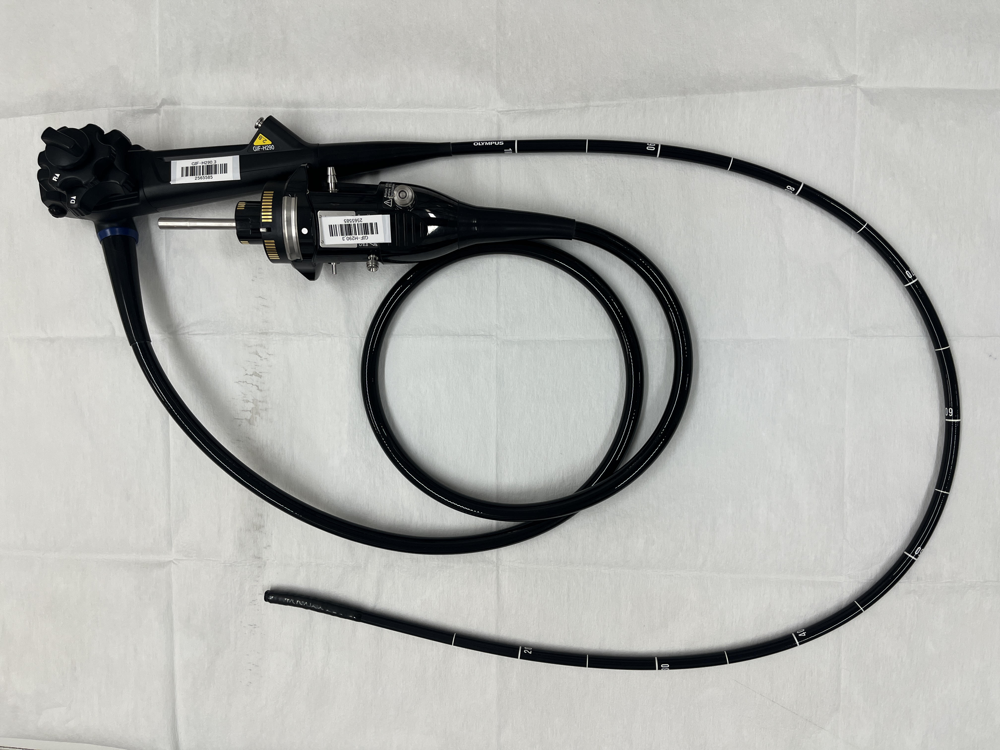
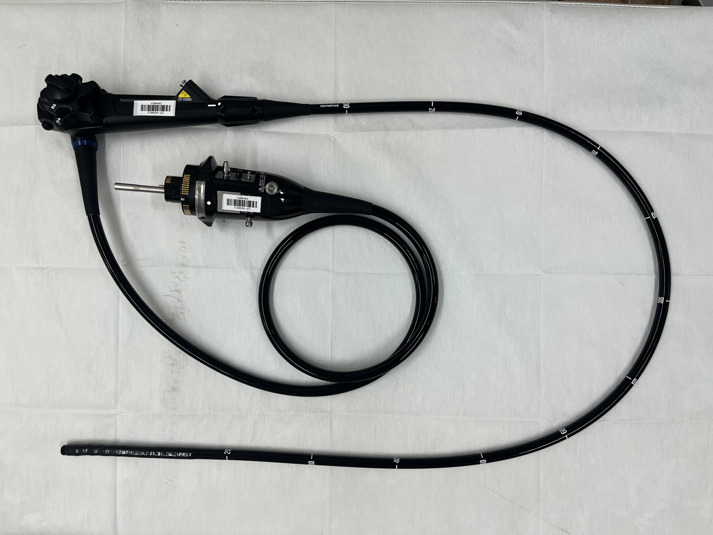
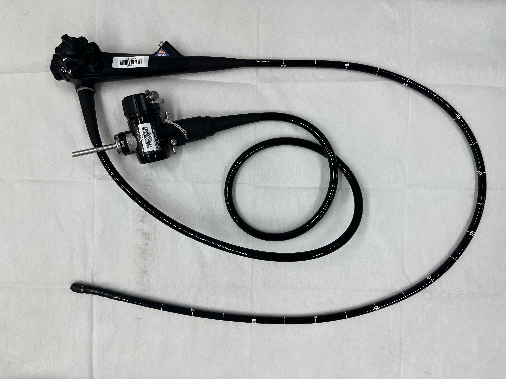
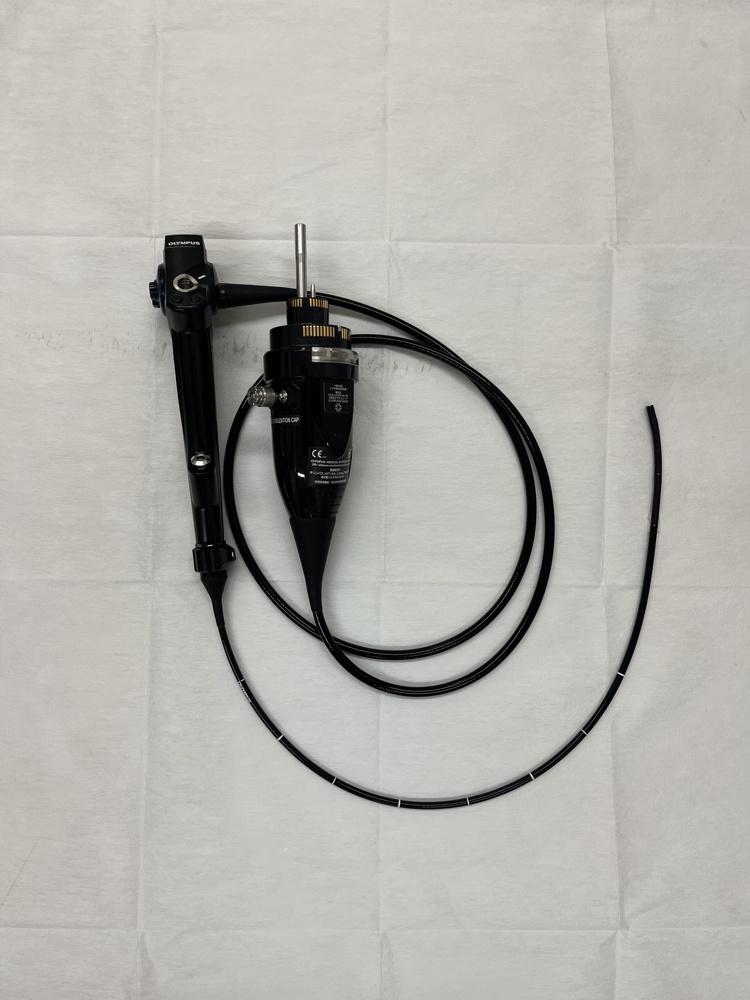
■高周波処置装置
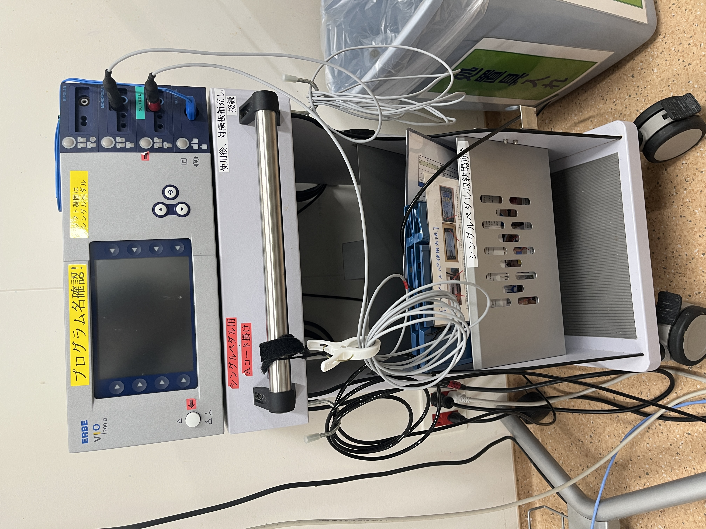
■自動洗浄消毒機
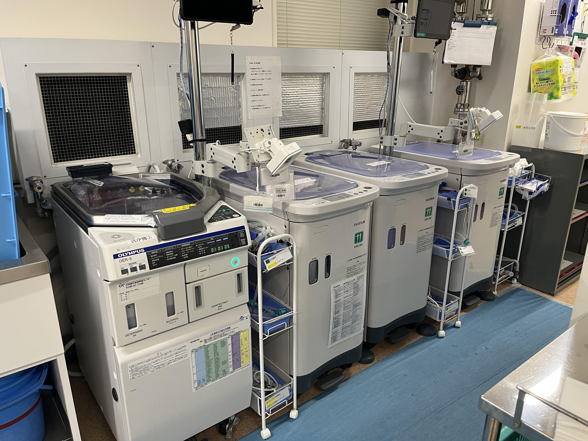
■各種モニター・周辺機器
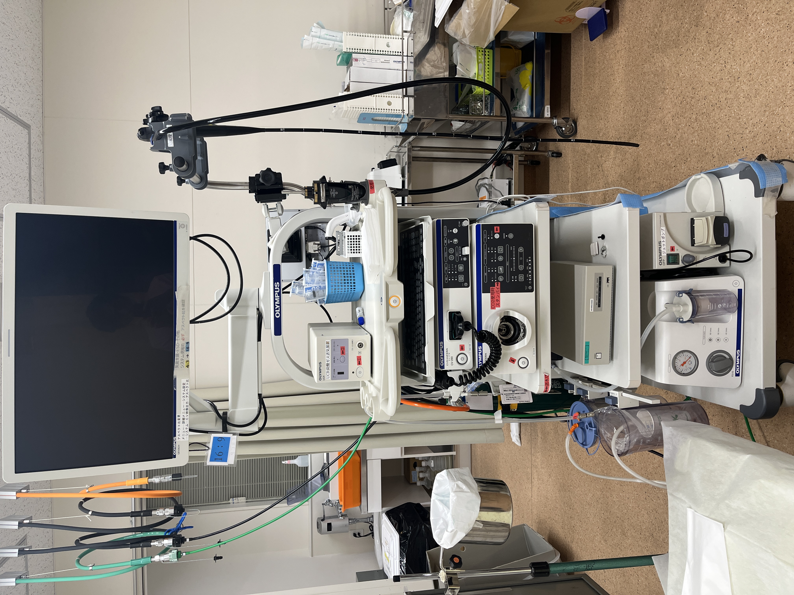
■内視鏡センターの様子（受付・検査室・リカバリー）
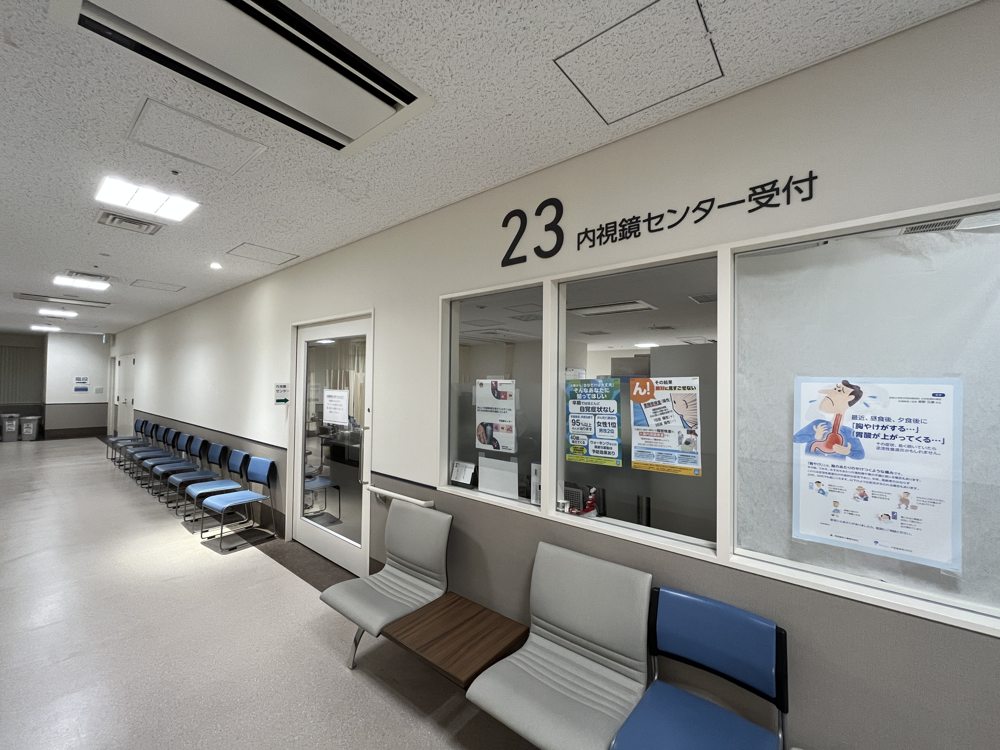
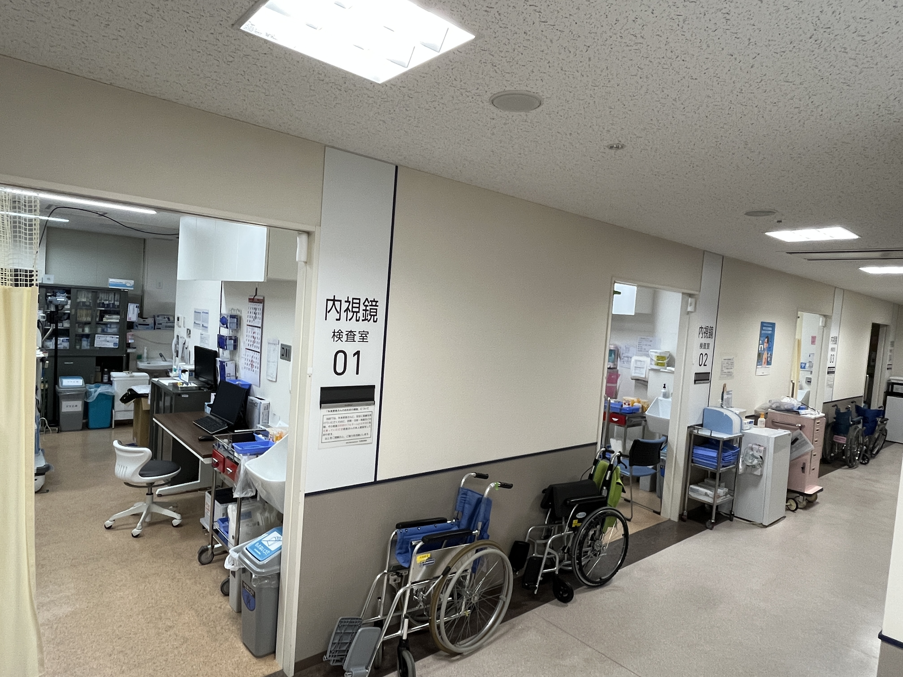

■内視鏡センターのチーム体制
当センターには、
・日本消化器内視鏡学会認定 内視鏡指導医・専門医
・消化器内視鏡技師資格を有する 看護師
・消化器内視鏡技師資格を有する 臨床検査技師
・臨床工学技士
・医療クラーク
など、多職種がチームとして連携しています。
「安心・安全・安楽・満足」を共通のキーワードに、
「ここで受けて良かった」と思っていただける医療の提供を目指しています。
内視鏡は決して楽な検査ではありません。
だからこそ、私たちが最大限のサポートをします。
不安なことは何でもご相談ください。
検査統計
| 2023年度 | 2024年度 | 2025年度 | |
|---|---|---|---|
| 上部消化管内視鏡 | 6217 | 6614 | 6595 |
| 下部消化管内視鏡 | 1716 | 1685 | 1612 |
| 内視鏡的粘膜剥離術（ESD） | 24 | 25 | 22 |
| 大腸ポリープ切除術 | 313 | 298 | 305 |
| 結腸EMR | 149 | 139 | 106 |
| 内視鏡的逆行性膵胆管造影検査（ERCP） | 42 | 38 | 55 |
| 気管支鏡検査 | 27 | 31 | 36 |
■内視鏡検査コラム
検査を受けるか迷っている方、受ける前に知っておきたい方へ。
● 検査を受ける前に知っておきたいこと
・日本の内視鏡受診の現状と、早期検査の重要性について（解説PDF）
・内視鏡ってどんな機械？（解説PDF）
・ピロリ菌と胃がんの関係（解説PDF）
・検査費用について（解説PDF）
・胃カメラとは？（解説PDF）
・大腸カメラとは？（解説PDF）
● 検査前に準備すること
・区民健診で受ける方へ（解説PDF）
・胃カメラ検査当日の流れ（解説PDF）
・大腸カメラ検査当日の流れ（解説PDF）
・経口内視鏡と経鼻内視鏡の違い（解説PDF）
● 検査後に知っておきたいこと
・内視鏡検査の合併症について（解説PDF）
・萎縮性胃炎と逆流性食道炎（解説PDF）
・どれくらいの頻度で検査を受ければよい？（解説PDF）
■内視鏡検査Q＆A
● よくある不安・疑問Q：検査は痛いですか？苦しいですか？
A：内視鏡は基本的にお身体に負担のかかる検査ですが、当院ではその苦痛を最小限に抑える努力をしています。
適正な鎮静剤の使用や細径スコープの採用に加え、検査中は可能な限りスタッフが寄り添いお声がけを徹底することで、少しでも楽に、安心して受けていただける環境を整えています。
Q：鎮静剤を使った場合、仕事や運転はできますか？
A：当日は自動車や自転車の運転はできません。
お仕事は内容によりますが、可能であれば検査当日はお休みをおすすめします。
Q：どれくらいの時間がかかりますか？
A：検査室に入ってから出るまで、
上部内視鏡（胃カメラ）：約15分程度
下部内視鏡（大腸カメラ）：約30分程度
治療やポリープ切除がある場合は、1時間前後になることもあります。
Q：大腸内視鏡は恥ずかしくないですか？
A：当院では、患者さんのプライバシーに十分配慮して検査を行っています。
検査室ではカーテンによる目隠しや体位の工夫を行い、必要最小限の範囲だけを露出していただくようにしています。
また、女性の方には女性医師による検査枠も設けておりますので、安心して受けていただけます。
Q：内視鏡スコープから感染することはありませんか？
A：ご安心ください。当院では患者様に安心して検査を受けていただけるよう、以下の徹底した感染防止対策を実施しています。
■ガイドラインに基づく厳格な洗浄・消毒： 検査ごとに、スタッフによる丁寧な手洗い（用手洗浄）を行った後、自動洗浄消毒装置を用いて確実に消毒を行っています。
■スコープの定期培養検査： スコープの安全性を客観的に確認するため、定期的な細菌培養検査（菌が残っていないかのチェック）を実施しています。
■衛生的な洗浄環境の維持： 各種ガイドラインを導入し、スコープだけでなく、洗浄・消毒を行う環境そのものが常に清潔に保たれているかも厳しく管理しています。
Q：大腸カメラの検査日を決める時に気をつけたほうがいいことはありますか？
A：大腸カメラの検査日を決める際は、検査当日だけでなく「検査の前後数日間」の過ごし方も含めてご予定を立てていただくことをおすすめします。
まず、検査後のご予定についてです。検査の際に組織を採取（生検）したりポリープを切除したりした場合、一時的に粘膜が傷つき、出血しやすい状態になります。
そのため、アルコールや刺激物の摂取、激しい運動は控えていただく必要があります。検査の後に会食などのご予定を入れるのは控え、ご自宅でリラックスできる日をお選びください。
また、検査前の準備も重要です。腸内をしっかりきれいにするため、検査の数日前から消化の良い食事を意識していただく必要があります。そのため、検査直前に外食が続くような時期は避けていただくのがベストです。
Q：大腸カメラ前に避けた方がいい食べ物は？
A：前日は消化の良い食事を心がけ、野菜・果物・海藻・きのこ・豆類・玄米・雑穀など繊維質の多いものは避けてください。
当日は原則絶食です（水やお茶は少量なら可）。
Q：服装はどうしたらいいですか？
A：締め付けの少ない、着脱しやすい服装がおすすめです。
大腸検査では専用の検査着にお着替えいただきます。
Q：ポリープを取ったら、どのくらいで再検査が必要ですか？
A：一般的には1〜3年後が目安です。
ただし、ポリープの大きさ・数・病理結果により間隔は変わります。
医師が適切な時期をご案内します。
Q：鎮静薬は安全ですか？
A：医師が体調を確認したうえで、モニター監視のもと安全に使用します。
鎮静剤の影響は数時間以内に消えますが、安全のため検査当日は安静にお過ごしください。
Q：ポリープを切除すると出血しますか？
A：発生率は数％未満で、ほとんどの場合はその場で止血が可能です。
検査後も経過観察を行い、安全に対応いたします。
Q：抗凝固薬（血液サラサラの薬）を飲んでいます
A：検査や治療内容によって、一時中止が必要な場合があります。
服薬の中止・継続は必ず主治医と相談のうえ決定しますので、事前にお申し出ください。
Q：妊娠していますが検査できますか？
A：妊娠中は状況により施行可能な場合と控えた方がよい場合があります。
安全を最優先に判断しますので、必ず事前にご相談ください。
Q：急に予定が変わった場合は？
A：できる限り対応しますので、早めにご連絡ください。
TEL：03-3262-9191
Q：予約はネットでできますか？
A：現在は電話・窓口でご予約を承っております
TEL：03-3262-9191